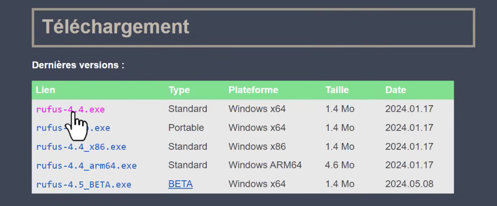
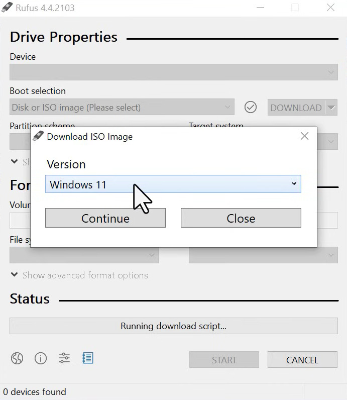
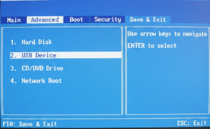
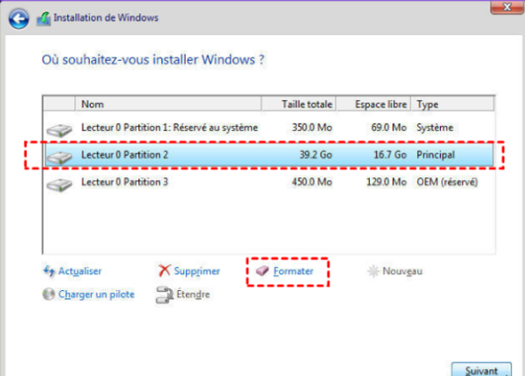
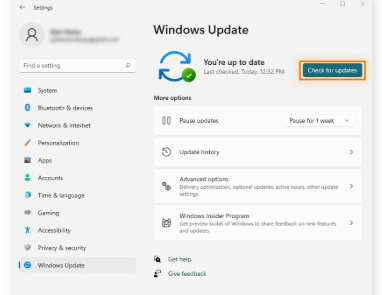
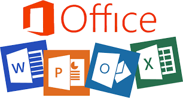

Détails de la Mission
Cette mission consiste à préparer intégralement un poste de travail informatique pour un nouvel utilisateur ou suite à un incident majeur nécessitant une remise à zéro complète.
Téléchargement de l'utilitaire Rufus
Configuration des options de création

Récupération de l'image ISO Windows 11
Préparation et insertion de la clé USB bootable

Redémarrage du PC et accès au menu de boot (F12)
Configuration du BIOS : Sélection du périphérique USB
Lancement de l'installation : Choix de la langue

Partitionnement et Formatage du disque
Mise à jour du système et installation des pilotes
Configuration des comptes utilisateurs

Installation de la suite Microsoft Office
Outils utilisés
Rufus, Windows Media Creation Tool, DriversCloud
Durée moyenne
2 à 3 heures par poste